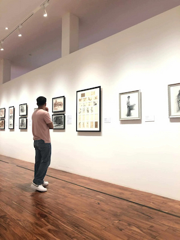

About Me
Hi! I'm Joseph Almeria, a student of Brigham Young University - Idaho online. I am currently taking WDD 131: Dynamic Web Fundamentals. I am a member of The Church of Jesus Christ of Latter-day Saints. I am a part-time employee working as a Customer Service Representative. I am a self-taught web developer and I am passionate about learning new technologies and building web applications.
Cebu, Philippines
Nestled in the heart of the Philippines, Cebu City is a vibrant metropolis blending rich historical heritage and modern urban energy. Known as the "Queen City of the South," it's famous for its stunning beaches, dynamic festivals, and bustling markets.